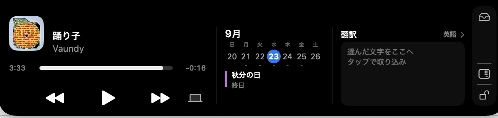
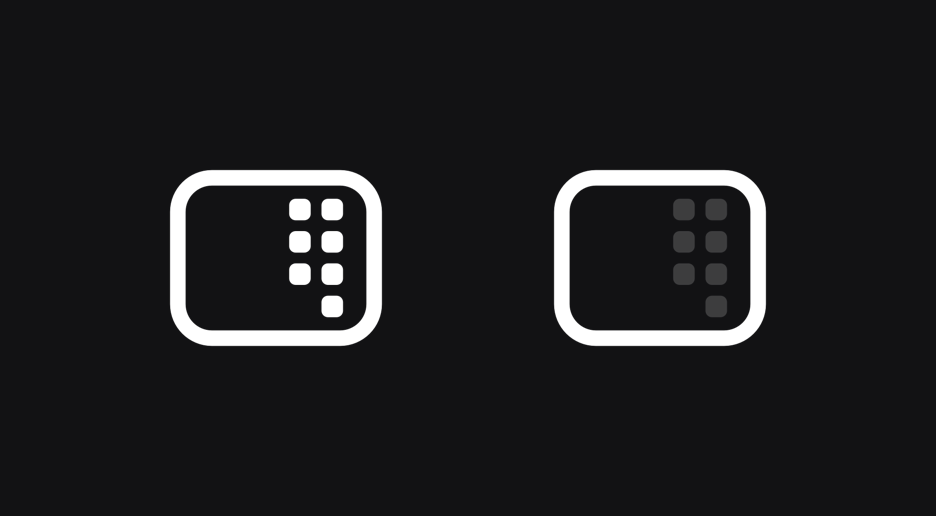

音楽
再生中の曲が、ノッチの左右にジャケットと波形で出ます。波形を押すだけで一時停止と再開。ミュージックや Spotify のほか、ブラウザで鳴らしている音にも対応します。
macOS 14 以降 / Apple Silicon
MacBook の上にある黒い部分。Noki はそこを開いて、いま流れている曲、今日の予定、翻訳、メモ、ファイルの一時置き場をまとめて出します。

再生中の曲が、ノッチの左右にジャケットと波形で出ます。波形を押すだけで一時停止と再開。ミュージックや Spotify のほか、ブラウザで鳴らしている音にも対応します。
今週の日付と、その日の予定。二本指で前後2週間までめくれて、予定が多い日は縦にスクロールできます。
打ちこんだ文をその場で訳します。どちら側にも入力できて、入れかえもワンタップ。翻訳は macOS が端末の中で行うので、文章はどこにも送られません。
思いついたことをその場で書きとめておけます。入力はすぐ保存され、書いている間はノッチが閉じません。
よく使うアプリやファイルをドロップすると、タイルになって並びます。ショートカット App に登録したものも呼び出せます。
ノッチにファイルをドラッグすると、そこに置いておけます。AirDrop で送るのも、別の場所へ移すのもそのまま。
メニューバーのアイコンを押すだけで、デスクトップに散らかったアイコンが消えます。画面を共有する前や、人に見せるときに。もう一度押せば戻ります。ファイルは消えません。

ダウンロードした Noki を「アプリケーション」に移してから開いてください。
アクセシビリティ（音量・明るさの表示と、メディアキーを使うため）とカレンダー（予定を出すため）。設定画面の「許可する」ボタンから入れられます。使わない機能の許可は入れなくても構いません。
開き方は「当てるだけ」と「クリック」から選べます。設定は、ノッチを右クリックすると出てきます。
曲の情報とカレンダーはこの Mac の中だけで扱い、外部に送信しません。アップデートが出たときは、アプリが自分で知らせます。
Windows のパソコンでも、画面の上の真ん中に同じノッチが出ます。使えるのは音楽・メモ・デスクトップを隠す機能です。カレンダー・翻訳・ショートカット・ファイルトレイは、今のところ Mac 版だけです。
Windows 版は準備中です。公開したら、ここからダウンロードできます。